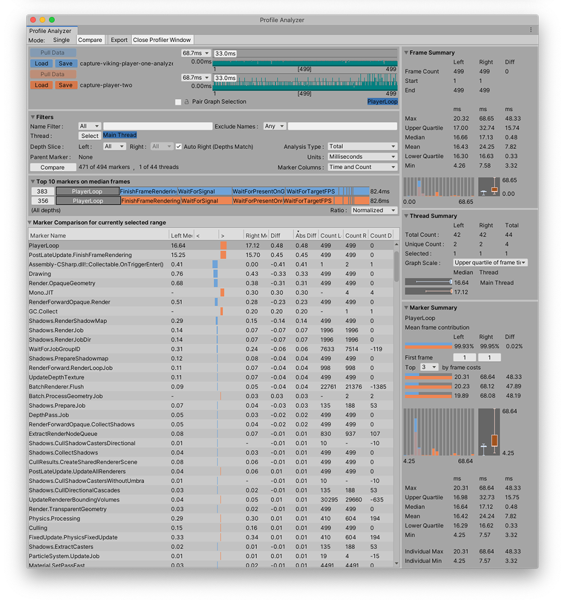

About the Profile Analyzer package¶
The Profile Analyzer aggregates and visualizes frame and marker data from a set of Unity Profiler frames to help you understand their behavior. You can use the Profile Analyzer to compare two sets of data side-by-side, which complements the single frame analysis already available in the Unity Profiler.
For information on how to use the Profile Analyzer, see the documentation on the Profile Analyzer window

The Profile Analyzer window, with two sets of data loaded to compare
Installing the Profile Analyzer¶
To install this package into versions of Unity that support the package manager follow the instructions in the Package Manager documentation.
When using any Unity version newer than 2021.2.0a5, you can just click this link to install it by name.
Earlier versions of Unity¶
For earlier versions, follow this link to the Profile Analyzer download and place the contents into your Project’s Assets folder.
Requirements¶
This version of the Profile Analyzer is compatible with the following versions of the Unity Editor:
5.6 and later
Known limitations¶
The Profile Analyzer has the following known limitations:
The original Profile data is not saved in the Profile Analyzer .pdata file. Therefore, you should store both the Unity Profiler .data file (or the .raw file exported from a stand alone player) along with the .pdata file.
When you click on a marker, the Profile Analyzer attempts to jump to the same marker in the Unity Profiler if the same data is loaded. You must make a selection in the Unity Profiler beforehand for this to work. In the Unity Profiler in the UI view, the vertical height is not correct.
On Unity 5.6 and 2017.4, the Thread Select Window allows you to collapse the ‘All’ threads item, which has no purpose.